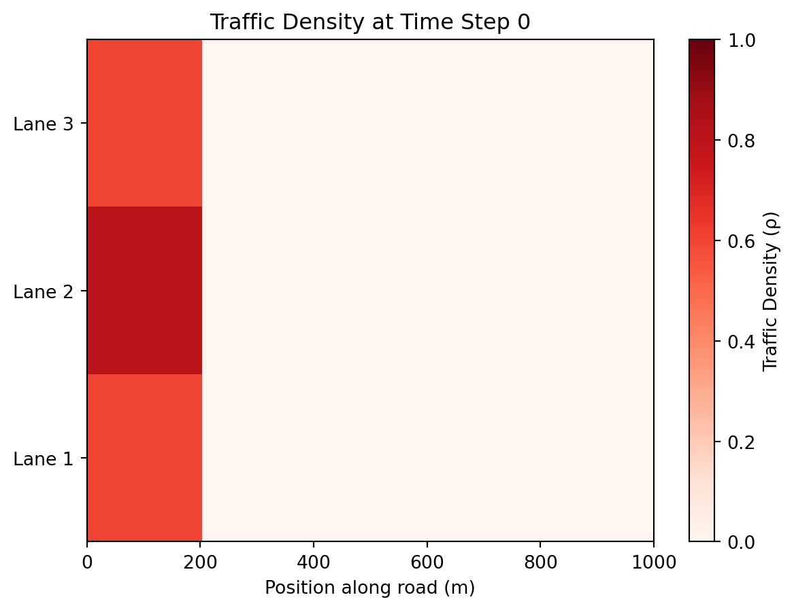

Show the code
"""
Created on Wed Mar 11 10:32:01 2026
"""
import numpy as np
import matplotlib.pyplot as plt
from matplotlib.animation import FuncAnimation
#%%#-----------------------------------Define Road-----------------------------------#
'''Lets you set physical constants of the model, such as length of the road, number of nodes to split the length into,
how many lanes there are, and the number of time steps over which the simulation runs'''
L = 1000 #m
num_nodes = 400 #number of discrete nodes
num_lanes = 3 #number of lanes on the road
dx = L/num_nodes #size of each node, m
dt = 0.5*dx #time step
T = 250 #number of time steps
x = np.linspace(0,L,num_nodes,endpoint=False) #array of node positions
road_rho = np.zeros((num_lanes, num_nodes)) #blank array to represent density of cars at each node
#%%#---------------------------------Road Initial Conditions--------------------------------#
#-------------------Initial Conditions, set inital densities on the road--------------------#
'''Lets you set the inital density on the road, with 0 being empty and 1 being ubmper to bumper traffic'''
#lane 3
road_rho[2, x<=200] = 0.6
road_rho[2, (x > 200) & (x < 400)] = 0.0
road_rho[2, x>=400] = 0.0
#lane 2
road_rho[1, x<=200] = 0.8
road_rho[1, (x > 300) & (x < 500)] = 0.0
road_rho[1, x>=500] = 0.0
#lane 1
road_rho[0, x<=200] = 0.6
road_rho[0, (x > 200) & (x < 400)] = 0.0
road_rho[0, x>=400] = 0.0
#---------------------------------------Light placement-------------------------------------#
'''Lets you place a stoplight that is by default set to be red, and a time frame at which it will turn green'''
light_x = 300
light_idx = int(light_x/dx) #this is the index we will assume the light is at
green_frame = 150
#------------------------------------Lane closure-------------------------------------------#
'''Lets you set which lanes are closed, as well as what time frame they close and over what range they close'''
closed_lanes = [1, 2]
close_frame = 50
left_close_x = 300
right_close_x = 600
left_close_idx = int(left_close_x/dx)
right_close_idx = int(right_close_x/dx)
#------------------------------------Lane changing------------------------------------------#
'''Lets you how fast density diffusion happens across lanes, both normally and when a lane is closed'''
D = 0.005 #represents lane change strength in the diffusion term
D_closed = 0.05 #represents lane change strength for a closed lane
#%%#-----------------------------------Step Through Time------------------------------------#
def q(rho):
'''Finds the flow rate of cars as a function of density. Density is a range of empty road = 0 to no space = 1'''
u = 1-rho #u is a range from stopped = 0 to umax (the speed limit) = 1
q = rho*u
return q
def LF_flux(rho_left, rho_right):
alpha = 1.0
return 0.5 * (q(rho_left) + q(rho_right)) - 0.5 * alpha * (rho_right - rho_left)
def time_forward_light(rho, light_color):
'''Takes an array (referred to as rho) of form [lanes,nodes] and updates then returns
the entire array in the same form using the Lax-Friedrichs finite difference
Blocks flow at the light idx'''
rho_new = np.zeros_like(rho) #Create
for lane in range(num_lanes): #For each lane
for idx in range(1,num_nodes-1): #For each node
flux_right = LF_flux(rho[lane, idx], rho[lane, idx+1])
flux_left = LF_flux(rho[lane, idx-1], rho[lane, idx])
if light_color == 'red':
#No flux goes into the light index
if idx == light_idx - 1:
flux_right = 0.0
if idx == light_idx:
flux_left = 0.0
#This is the Lax-Friedrichs finite difference approximation, meaning it uses a central difference to make sure waves can go both directions
rho_new[lane, idx] = rho[lane, idx] - (dt / dx) * (flux_right - flux_left)
#Simple left and right boundary condition
rho_new[lane, 0] = rho[lane, 0]
rho_new[lane, -1] = rho[lane, -1]
return rho_new
def time_forward_closure(rho, lane_status):
'''Takes an array (referred to as rho) of form [lanes,nodes] and updates then returns
the entire array in the same form using the Lax-Friedrichs finite difference
Blocks flow between the left and right closed idx'''
rho_new = np.zeros_like(rho) #Create copy to store new values
for lane in range(num_lanes): #For each lane
for idx in range(1,num_nodes-1): #For each node
flux_right = LF_flux(rho[lane, idx], rho[lane, idx+1])
flux_left = LF_flux(rho[lane, idx-1], rho[lane, idx])
if lane_status == 'closed' and lane in closed_lanes:
#No flux goes into the closed section
if idx == left_close_idx - 1:
flux_right = 0.0
if left_close_idx < idx < right_close_idx:
flux_left = 0.0
flux_right = 0.0
if idx == right_close_idx:
flux_left = 0.0
#This is the Lax-Friedrichs finite difference approximation, meaning it uses a central difference to make sure waves can go both directions
rho_new[lane, idx] = rho[lane, idx] - (dt / dx) * (flux_right - flux_left)
#Simple left and right boundary condition
rho_new[lane, 0] = rho[lane, 0]
rho_new[lane, -1] = rho[lane, -1]
return rho_new
def time_forward_lanechange(rho, lane_status):
'''Takes an array (referred to as rho) of form [lanes,nodes] and updates then returns
the entire array in the same form using a Fick's Law of Diffusion equation to move
density between adjacent lanes'''
rho_new = np.zeros_like(rho) #Create copy to store new values
for lane in range(num_lanes): #For each lane
for idx in range(1,num_nodes-1): #For each node
#Set default diffusion coefficient values
D_10 = D
D_21 = D
#Change D value to be higher in a closed lane
if lane_status == 'closed':
if 2 in closed_lanes:
D_21 = D_closed
if 1 in closed_lanes:
D_10 = D_closed
D_21 = D_closed
if 0 in closed_lanes:
D_10 = D_closed
#Fick's flux between lane 0 and 1 (positive goes from 1 into 0)
Fi_flux_10 = D_10 * (rho[1, idx] - rho[0, idx])
#Fick's flux between lane 1 and 2 (positive goes from 2 into 1)
Fi_flux_21 = D_21 * (rho[2, idx] - rho[1, idx])
#If the index is in the closed region and the lane is closed
if left_close_idx < idx < right_close_idx and lane_status == 'closed' and 2 in closed_lanes:
if Fi_flux_21 < 0: #If the flux has cars moving into the closed lane
Fi_flux_21 = 0
if left_close_idx < idx < right_close_idx and lane_status == 'closed' and 1 in closed_lanes:
if Fi_flux_10 < 0: #If the flux has cars moving into the closed lane
Fi_flux_10 = 0
if Fi_flux_21 > 0: #If the flux has cars moving into the closed lane
Fi_flux_21 = 0
if left_close_idx < idx < right_close_idx and lane_status == 'closed' and 0 in closed_lanes:
if Fi_flux_10 > 0: #If the flux has cars moving into the closed lane
Fi_flux_10 = 0
#Update lanes
if lane == 2:
rho_new[lane, idx] = rho[lane,idx] - Fi_flux_21
if lane == 1:
rho_new[lane, idx] = rho[lane,idx] - Fi_flux_10 + Fi_flux_21
if lane == 0:
rho_new[lane, idx] = rho[lane,idx] + Fi_flux_10
#Simple left and right boundary condition
rho_new[lane, 0] = rho[lane, 0]
rho_new[lane, -1] = rho[lane, -1]
return rho_new
#%%#-----------------------------------Plot Initial State-----------------------------------#
# plt.figure()
# plt.imshow(road_rho, aspect='auto', origin="lower", cmap="Reds")
# plt.xlabel("Position along road")
# plt.yticks([0.5, 1.5, 2.5], ["Lane 1", "Lane 2", "Lane 3"])
# plt.title('Initial Condition')
# plt.show()
#%%#-----------------------------------Plot Final State-------------------------------------#
#Steps forward going through each time step and plots the final state
# for i in range(T):
# road_rho_new = time_forward_light(road_rho, 'green')
# road_rho = road_rho_new
# plt.figure()
# plt.imshow(road_rho_new, aspect='auto', origin="lower", cmap="Reds")
# plt.xlabel("Position along road")
# plt.yticks([0.5, 1.5, 2.5], ["Lane 1", "Lane 2", "Lane 3"])
# plt.title('Final Condition')
# plt.show()
#%%#-----------------------------------Animation Setup--------------------------------------#
fig, ax = plt.subplots()
#Set the image we'll update as the road density array, populated with the inital values
img = ax.imshow(road_rho, aspect='auto', origin="lower", cmap="Reds", extent=[0, L, 0, num_lanes], interpolation='nearest', vmin= 0, vmax = 1)
scale = fig.colorbar(img, ax=ax)
scale.set_label('Traffic Density (ρ)')
ax.set_xlabel("Position along road (m)")
ax.set_yticks([0.5, 1.5, 2.5])
ax.set_yticklabels(["Lane 1", "Lane 2", "Lane 3"])
ax.set_ylim([0,3])
title = ax.set_title("Traffic Density at Time Step 0")
def first_frame():
'''Sets the animation to the initial road density before any updates happen'''
img.set_data(road_rho)
title.set_text("Traffic Density at Time Step 0")
return [img, title]
def update_light(frame, road_rho):
'''Advances the simulation by one time step and updates the image'''
if frame < green_frame:
road_rho[:] = time_forward_lanechange(road_rho, 'red')
road_rho[:] = time_forward_light(road_rho, 'red')
title.set_text(f"Traffic Density at Time Step {frame + 1} - Red Light")
else:
road_rho[:] = time_forward_lanechange(road_rho, 'green')
road_rho[:] = time_forward_light(road_rho, 'green')
title.set_text(f"Traffic Density at Time Step {frame + 1} - Green Light")
img.set_data(road_rho)
return [img, title]
def update_closure(frame, road_rho):
'''Advances the simulation by one time step and updates the image'''
if frame < close_frame:
road_rho[:] = time_forward_lanechange(road_rho, 'open')
road_rho[:] = time_forward_light(road_rho, 'open')
title.set_text(f"Traffic Density at Time Step {frame + 1} - Open Lanes")
else:
road_rho[:] = time_forward_lanechange(road_rho, 'closed')
road_rho[:] = time_forward_closure(road_rho, 'closed')
title.set_text(f"Traffic Density at Time Step {frame + 1} - Lane Closure")
img.set_data(road_rho)
return [img, title]
def update_lanechange(frame, road_rho):
'''Advances the simulation by one time step and updates the image'''
road_rho[:] = time_forward_lanechange(road_rho)
title.set_text(f"Traffic Density at Time Step {frame + 1} - Open Lanes")
img.set_data(road_rho)
return [img, title]
#%%#-----------------------------------CHOOSE SITUATION!!-----------------------------------#
'''You must choose an update situation from the ones created for the program to run. Options are:
* update = update_closure , this runs a situation where lanes 1 and 3 are closed after 100 frames
* update = update_light , this runs a situation where there is a red light at x=300 for 150 frames
* update = update_lanechange , this has no forward movement, but still diffuses density between adjacent lanes'''
update = update_closure
ani = FuncAnimation(fig, update, frames=T, fargs=(road_rho,), init_func=first_frame, interval=100, blit=False, repeat=False)
plt.show()